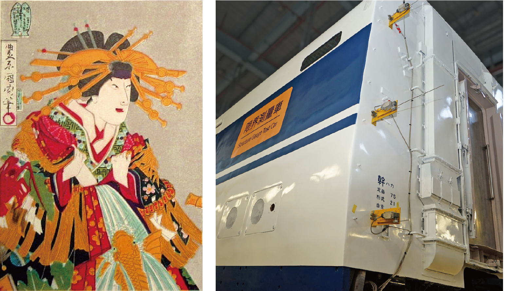
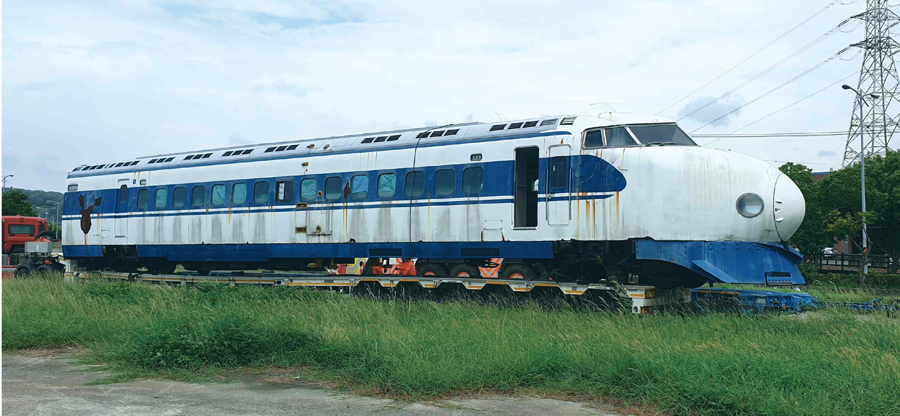
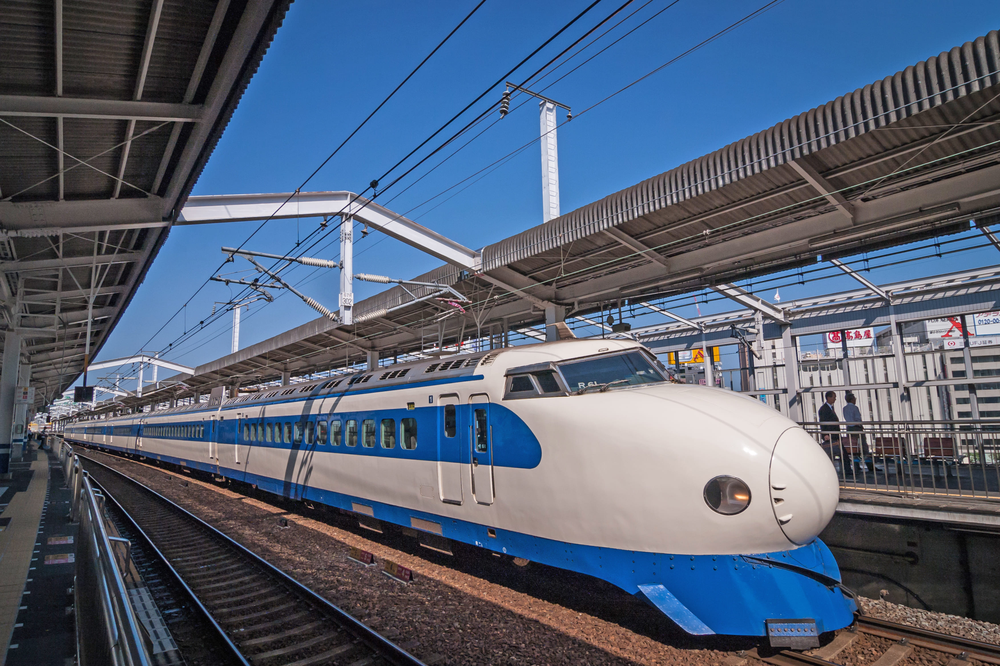
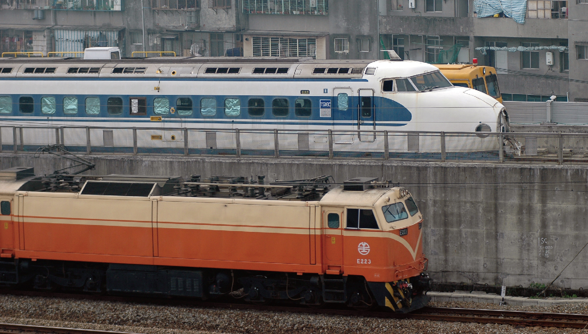

台南展區 - 花魁車地景公園
展示台一：展館論述、來台歷程
台灣高鐵公司遠在2003年高鐵興建期，即啟動高鐵重要歷史物件的徵集、研究與保存維護，繼而在2017年於桃園高鐵營運大樓正式成立台灣第一座高速鐵道博物館–「台灣高鐵探索館」，致力推展台灣高速鐵道科技與人文歷史教育。在正式接管典藏世界第一代高鐵「0系花魁車」後，高鐵探索館更肩負世界鐵道文化遺產保存、維護與傳承的重要使命。
花魁車地景公園建築結構採用三組垂懸木梁，下凹之弧形隱喻高速鐵路的速度感與流線感，也與新幹線0系車輛的曲線相互呼應；三軸線交錯而成的輻射狀結構形塑鐵道「扇形車庫」的意象，展區空間以0出發到無限大的發展元素闡述 0 系車輛與台灣高鐵的故事。而花魁車地景公園也是台灣高鐵探索館延伸至台南的文物展區，成為台灣高鐵公司首次展示車輛文物的公共空間。
世界第一代高鐵-「0系」在台灣
「0系」是世界上第一款高速鐵路電車，也是日本新幹線列車的始祖，於2007年8月被列為日本機械遺產，闡揚其卓越機械的成就，帶給人類交通與生活革命性的巨變與貢獻。新幹線0系電車運轉44年後，於2008年正式在世界高速鐵路中退役。
這輛世界第一款高鐵「0系」 (編號21-5035／原編號：21-1032），源自台灣高鐵興建期間，由JR西日本贈予當時獲得高鐵核心機電系統建造合約的日本「臺灣新幹線會社」（TSIEC)，並於2004年渡海來台，在高鐵興建的過程中擔任「限界測量車」任務，俗稱「花魁車」。功成身退後的「0系」花魁車，又由TSIEC承商，轉贈予台灣高鐵公司，2012年移轉台灣高鐵探索館典藏，正式成為高鐵鐵道文化資產，也是世界唯二在日本海外的0系。
0系花魁車，幾經調查研究與修復，最終選址高鐵台南站，坐落「台灣高鐵探索館-花魁車地景公園」，展現「0系」位於高速鐵路鰲頭的創新科技與成就，亦揭示新幹線「0系」在台灣「在地化」的次生面貌及衍生功能，不但在異國重生，也與台灣高鐵交融成為台灣高速鐵道文化歷史的一環。
展示台二：「0系花魁車」修復典藏紀實
「花魁」之名何來?
「花魁車」也是日本鐵道限界測量車的俗稱。基於測量路線界限和檢測軌道需求，台灣高鐵必須自行在車體外部安裝許多宛如「髮簪」的測量儀器，執行任務時會延伸出車身，外觀宛如江戶時代的花魁會在髮型上插飾繁複髪簪，因此暱稱其為「花魁車」。
0系花魁車的DNA
「0系花魁車」原是在日本完成告別班次的「0系」(編號21-5035)車頭，為小窗 1000番代車的一員，屬第 25批次新幹線車輛，由東急車輛製造廠於1978 年 6 月 19 日產製。根據車內銘板顯示這台車係於平成10年（1998年）於JR西日本的博多總合車輛所改裝成「限界測量車」，2004年7月16日再抵台，協助台灣高鐵的興建，負責檢查高鐵行進範圍空間是否合格，以確保台灣高鐵營運時的高速行駛安全。
修工程與紀實
「0系花魁車」在台以「限界測量車」退役後，便暫存於高鐵新竹六家基地，幾經簡易的修復，仍無法抵抗大自然的破壞，基於保存與傳承這輛深具世界鐵道科技劃時代意義的鐵道文化資產，2018 年經國立科學工藝博物館、鐵道專家與文保團隊的調查研究，以復原「0系花魁車」2004-2006年間服役時期的外觀與內裝為修復目標，並依循里加憲章(The Riga Charter) 精神，制訂「0系花魁車」的修復計畫，並於2019年啟動修復。
「0系花魁車」的修復工程涵蓋：車體外觀修整、塗料復原、標誌復原、玻璃窗除垢拋光、車頭燈除垢拋光、下方踏板與排障器復原。 整台車輛經過清潔、去漆、除鏽等多重工序後，再將車頂鈑、裙擺、鼻頭檢修蓋、門板、門框、車頂觀測窗等等部件一一卸下，徹底檢視鏽蝕及變形情況。車體及各部件鏽穿腐爛的部份，切除後採取精密修補或新製鈑件銜接，以繁複手法確保外觀平整。車內部分也精心整理，例如駕駛室控制面板重製、駕駛座椅整修，甚至連滅火器扣帶也進行修復。 最終的車體噴漆，採用了0系電車「青20號、奶油色10號」經典配色，並比照汽車美容等級來施作；車身上的數字及標記，均以原始字型及圖案噴漆或復刻。「0系花魁車」於2019年12月完成修復作業，總共歷時兩年，成為鐵道文化資產車輛維護與保存的典範。
展示台三：新幹線0系介紹
世界高速鐵路先驅的傳奇-新幹線「0系」
「0系」是集日本鐵道技術之大成， 1964年10月1日東京奧運會舉辦前夕，這項凝聚日本鐵路人心血的高速鐵路科技正式通車，將東京到大阪從過去的七小時，大幅縮短成為四小時，並在營運的第二年達到了令世人艷羨的210公里時速。
「0系」新幹線電車在日本鐵道上奔馳了44個年頭之久，且未曾發生任何傷亡事故，寫下「安全神話」的「0系」於2008年功成身退。因新幹線「0系」成功的鐵道科技，也啟發了全球各地高速鐵路的研發，促使法國的TGV（1981年）和德國的ICE（1991年）相繼問世。新幹線「0系」開啟世界高速鐵路新紀元，以創新的科技，重新定義人類的生活與產經模式。
新幹線「0系」之命名
新幹線（新幹線／しんかんせん／Shinkansen）是日本的高速鐵路系統，採用標準軌（1435mm）之軌距，之所以稱做「新幹線」，是因為它是全新的幹線，與既有的「在來線」不相同。日本《全國新幹線鐵道整備法》中，將新幹線定義為「列車在主要區間能夠以每小時200公里以上的高速度行駛之幹線鐵路」。 「0系」初期只被稱為「新幹線電車」，而官方內部名稱是「000系」，並未對外公布。一直到東北、上越新幹線的200系投入服務後，才開始被稱為「0系」。
新幹線「0系」設計
1950年代末期，隨著日本在二戰後，百業待興，其中以東京都區部和大阪市最為迫切高速交通。東海道新幹線建設之初的國鐵總裁十河信二任命國鐵總工程師島秀雄擔任列車的設計總指揮。
展示台四：花魁車剖面模型
花魁車剖析及限界測量工作
台灣高鐵設計階段中，路線上各橫斷面，尤其月台、隧道、橋涵等處所保留的淨空範圍，均須符合建築界限規範。完工後亦須以各種測量手段來確認，這時就需要「限界測量車」登場了。
「0系花魁車」主要是擔任限界測量任務，負責高鐵興建期間檢視車站結構、月台設施、橋梁隧道等結構是否超出建築界限，而侵入鐵道路線淨空範圍內，方能確保高鐵未來行駛安全。
為了測試沿線的淨空是否合格，在日本九州博多總合車輛所改裝這輛0系，除了拆除客室內部分座椅，加裝測量儀器，還在車頂改裝了觀測小窗，供工程人員探頭監視之用。而在車外，則有探針及超音波探測器，環繞車身兩側，能在前進時偵測車身與建築之距離，以及是否與碰觸到任何障礙物。由於這輛「0系花魁車」來台後已無動力，不能自力行駛，必須由同樣來自日本的DD14型柴液機車推進，方能執行任務。

展示台五：軌道路床介紹
軌道路床形式
台灣高鐵為了因應沿線地質條件以及提供最安全與最高品質的乘坐效果，在軌道路床的設計概念分為低振動軌道(LVT)、日本版式軌道(J-SLAB)、德國式軌道版(Rheda)、道碴軌道(Ballast Track)以及只出現在台北站的嵌入式軌道 (Embedded Rail System)。 (LVT)、日本版式軌道(J-SLAB)、德國式軌道版(Rheda)、道碴軌道(Ballast Track)以及只出現在台北站的嵌入式軌道 (Embedded Rail System)。
日本版式軌道(J-SLAB)
在橋梁段，選擇同受地震所苦的「日本版式軌道」(J-SLAB)。日本版式軌道以混凝土預鑄製作，再搬運到橋梁上鋪設，並以CA砂漿固定，能夠兼顧軌道品質與施工速率，因此採用日本版式軌道，約占台灣高鐵軌道全線80.9%。(展區使用此形式軌道) (LVT)、日本版式軌道(J-SLAB)、德國式軌道版(Rheda)、道碴軌道(Ballast Track)以及只出現在台北站的嵌入式軌道 (Embedded Rail System)。
德國軌道版(Rheda 2000)
靠近車站與車站內的版式軌道，選用「德國式軌道版」(Rheda軌道),能夠非常精準地將軌道定位，搭配轉換軌道的系統(轉轍器)提供最安全的措施，約占台灣高鐵軌道全線14%。
低振動軌道(LVT)
在台北地下段(自板橋到南港)，台灣高鐵會行經台北都會區，為避免附近居民受到振動與噪音影響，選擇「低振動軌道」(Low Vibration Trackform,LVT)以混凝土塊下的雙層彈性橡膠墊板吸收列車行駛的壓力，減低振動與噪音，約占台灣高鐵軌道全線3.6%。
道碴軌道(BallastTrack)
道碴的用途是減少列車對軌道與地面的壓力，也增加排水性。 台灣高鐵只在少部分平面地段使用，如左營車站與維修基地，避免平面上列車行駛噪音影響到居民的生活品質。
展區
展區
展區
展區
公開的密室 ─ 高鐵文史庫房
台灣高鐵文史保存的啟動，緣起於台灣高鐵公司首任董事長 — 殷琪女士，邀請國內鐵道專家的前瞻決策下，啟動相關物件的徵集。「台灣高鐵探索館」以台灣高鐵累積的鐵道文化資產為基礎，以保存鐵道文化資產為核心價值，持續蒐集及保存重要的歷史物件。
實際操作說明
「公開的密室」是透過高科技的液晶光電玻璃，可以點選每一片玻璃右上方的「透明展示」按鈕，讓原本不透明的液晶玻璃，馬上成為透明的狀態，讓大家探索高鐵文史庫房內的樣子。由於博物館文史庫房有嚴格的溫度、濕度，與相關的環境控制；藉由光電玻璃的呈現方式，邀請大家到現場一窺文物保存庫房與運作的內容。
台灣高鐵文史庫房的創生與遷移
草創期
—
2003年
2003年10月16日奉殷董事長指示，台灣高鐵公司針對沿線各標段有關鐵道歷史標的物進行研究、調查彙整工作，並強調「人」與「物」的資料搜尋。
大園時期
— 2004年 —
2007年
2006年，大量興建文物已蒐集至租用之桃園庫房存放，當時面對即將來臨的營運期可能產生的文物。2006年8月，委託科工館進行高鐵文物典藏政策、分類、作業辦法之研擬。
大園文史庫房時期，台灣高鐵歷史標的物，僅處於臨時性的登錄與存放，但礙於物件的數量累增與其典藏價值不明，亟需各式專家的支援，協助高鐵奠定完善的蒐藏方針與管理政策；台灣高鐵公司遂委聘開物國團隊，率先導入國外先進文物整飭技術，正式奠定高鐵歷史標的物保存維護的重要基石。
燕巢時期
— 2007年 —
2016年
有礙於台灣高鐵大園文史庫房的硬體設備條件不足，基於文物整飭與典藏環境條件所需，台灣高鐵公司重新規劃設置高鐵文史庫房於高雄燕巢總機廠，促使其更具典藏使用條件與規模。
2007年12月10日，高鐵文史庫房遂自桃園大園遷移至高雄燕巢總機廠，簡稱台灣高鐵燕巢文史庫房。搬遷工程浩大，當時4,000餘件的高鐵歷史標的物，費時四次搬遷，動員眾多人力與20餘輛各載重15噸之搬運車。
「高鐵文史庫房」回歸母親的懷抱，在燕巢總機廠找到一個安定的家。委託開物國文物整飭專業團隊，開始進行高鐵文物典藏政策修訂與文物整飭工程，為高鐵文物注入符合文物保存科學的能量，並規劃建置文物典藏管理系統，為每一件文物打造符合博物館典藏維護的溫床，奠定高鐵文物保存永續發展之基礎。
探索館時期 —
2016至今
歷經13年來的文物徵集，文史庫房再度從燕巢總機廠遷移至桃園探索館，高鐵文物已穿越十年的時空，歷經歲月的洗鍊，正式站在台灣高速鐵道科技的展示舞台。